Basics of Plots
Dai Shizuka
updated 11/05/24
R is amazing for graphics–i.e., visualizing data. Once you learn how to play around with the codes, it is almost infinitely customizable. In fact, R has become a major tool for graphics departments at major journalism outlets such as the BBC. There are also many wonderful resources for how to make compelling and clear visualizations of data (e.g., this book by Claus Wilke)
But let’s not get ahead of ourselves. In this module, we will cover the basics of the plotting functions in the base package of R. There are many additional packages that help you produce fancier plots (e.g., ‘ggplot2’ and ‘lattice’). We may cover ggplot2 later in the course.
5.1 First Question: What do you want to show?
There many, many different ways to visualize data (see datavizproject.com). In fact, “data visualization” is an industry in and of itself at this point. What we need is some directory of different kinds of ways to visualize a given set of data.
The directory of visualizations presented in Claus Wilke’s online version of his book is as good as any I’ve seen.
5.1.1 Types of data: Continuous, Count, and Categorical
Continuous data are quantitative measurements that can take any value. That is, it can be divided and reduced to finer levels. For example, take weight, height, or length. In R, these types of data would be handled as numerical vectors.
Count data or frequencies are also quantitative measurements, but they cannot be divided into smaller levels. They are counts of whole things. These are typically integers. In R, they would be either numerical vectors or integers.
Categorical data are qualitative data are characteristics, descriptors or labels that are not numerical. In R, these would be stored as factors or character strings.
Depending on the mix of different variables, you can display them in different ways.
5.2 The Basics
We will start with the generic plot() function. This
function can produce a variety of basic plots. The function can take two
different syntax:
plot(x , y)– The Cartesian format will take two variables and plot the first element on the x-axis and the second element on the y-axis. The plot this produces will depend on the type of variables (i.e., numeric or factor) that you put in.plot(y~x)is an alternative syntax (“formula” syntax) which will produce the same plot as above. In this case, you are plotting a relationship–i.e.,yas a function ofx
R will automatically detect the type of vector (variable) you are trying to plot.
5.2.1 Let’s try it out: Scatterplots and boxplots
Try plotting two numerical vectors (i.e., continuous variables) that we create:
a=seq(1,15, 1) #continuous variable 1
b=seq(16,30,1) #continuous variable 2
plot(a, b) #plot two continuous variables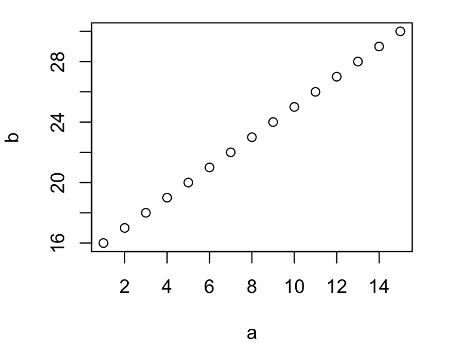
You can see that R automatically detects the two vectors
(a and b) as continuous variables and creates
a scatter plot.
Now, let’s create a fictitious factor vector (i.e., discrete
variable) and plot one of the continuous variables against that.
fac=factor(c(rep("A", 5), rep("B", 5), rep("C", 5))) #a factor
plot(fac, a) #plot factor on x-axis and continuous variable on y-axis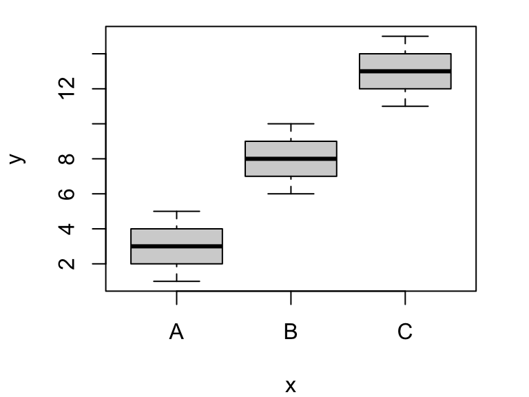
Here, R recognizes that we want to plot a factor on the x-axis and continuous variable on y-axis and defaults to a box plot.
You can also plot using a formula syntax, using a
~:
plot(a~fac) #formula syntax using "~"Notice that, in the formula syntax, the order of the variables is
different. Here, you are saying “plot a as a function of
fac”, so the first variable will show up on the y-axis and
the second variable will be plotted on the x-axis.
5.2.2 Line plots
If you have a timeseries, you sometimes want to create a line
plot. You can do this simply by designating the plot ‘type’
inside the plot() function:
t=seq(1,10,1) # time sequence, from 1 to 10
response=c(1,5,4,2,3,9,6,7,8,10) # 10 random numbers
plot(t, response, type="l") #plot a line plot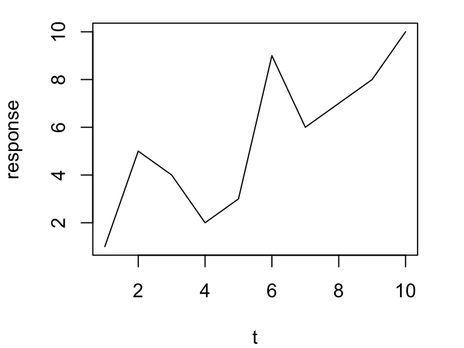
You can plot the same figure with both lines and points by using
type="b" for “both”
t=seq(1,10,1) # time sequence, from 1 to 10
response=c(1,5,4,2,3,9,6,7,8,10) # 10 random numbers
plot(t, response, type="b") #plot a line plot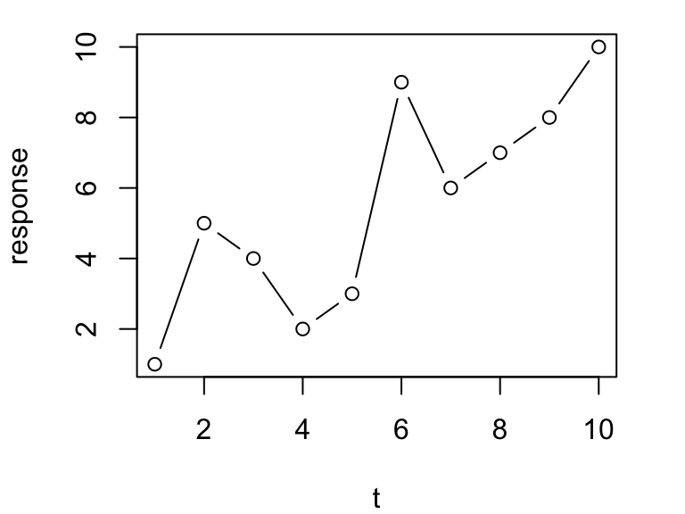
You can plot the same figure using a few other formats (you can look
these up using ?plot()). Try these out (outputs not
shown):
plot(t, response, type="p") #plot just points
plot(t, response, type="h") #Make a histogram-like plot with thin lines
plot(t, response, type="s") #Make stair steps5.2.3 Bar plots
Now let’s try making a simple barplot showing frequencies of some categorical variable. Here, we’ll just set up some fictional set of observations of individuals belonging to some groups (say species), “a”, “b” and “c”
groups=c(rep("a", 10), rep("b", 5), rep("c", 2))We can plot the frequencies of these groups as a barplot:
groups.table=table(groups) #create a frequency table
groups.table #look at it## groups
## a b c
## 10 5 2barplot(groups.table) #plot it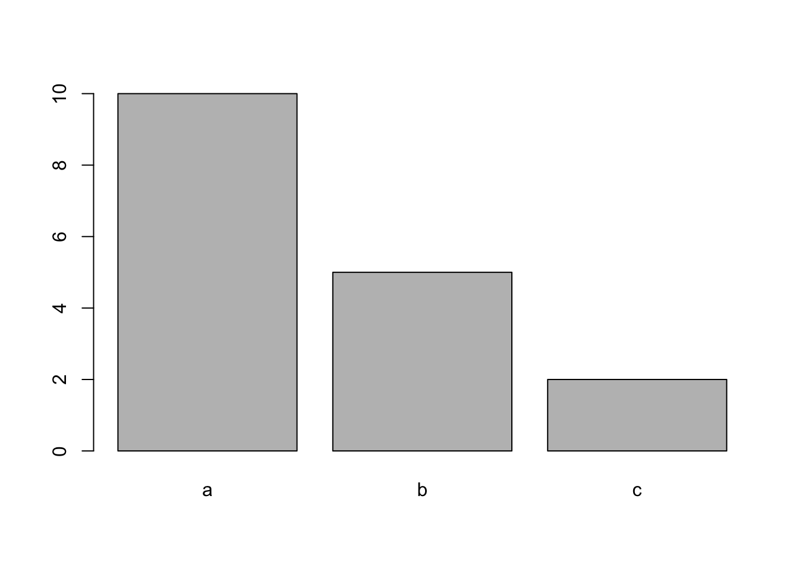
5.3 Plotting data from a dataframe
Let’s practice plotting data from a dataframe.
First, we need some data to play with. For this exercise, we will use a
dataset called iris, which is pre-loaded in R:
iris #see all the data
str(iris) #see the structure of the iris dataset
?iris #learn more about the datasetThe basic structure of the dataset is that there are 4 continuous variables (length & width of sepals and Sepals) measured for individuals in 3 different species of iris (Figure 1). This dataset is useful for demonstrating the basics of plotting because it has both continuous and discrete variables.
Let’s try plotting two continuous variables against each other:
plot(iris$Sepal.Length, iris$Sepal.Width)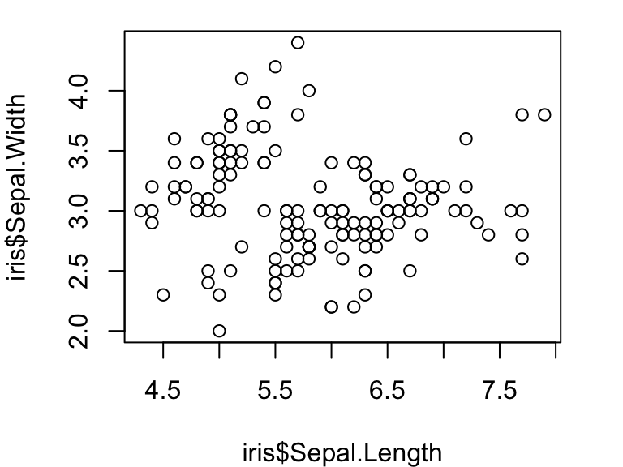
Compare this with what happens when you plot a continuous variable (sepal length) against a factor (iris species):
plot(iris$Species, iris$Sepal.Width)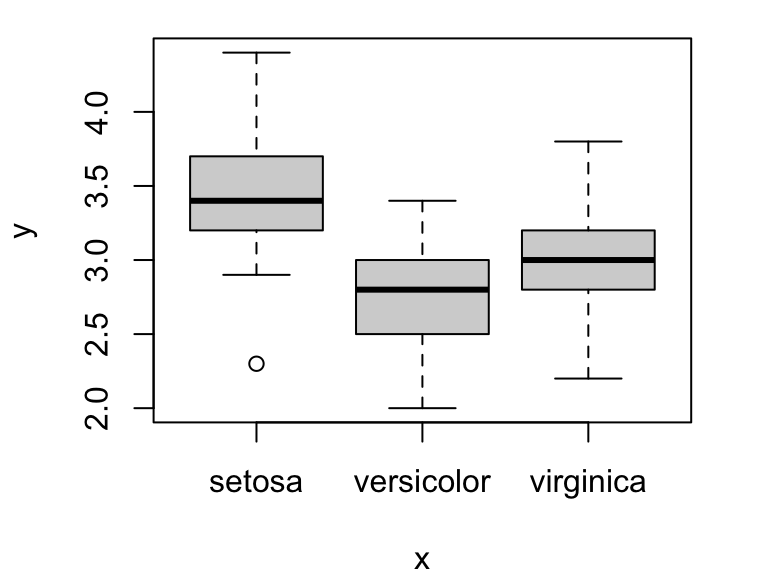
You can also use the formula syntax to do the same thing. Try:
plot(iris$Sepal.Width~iris$Sepal.Length) #scatterplot
plot(iris$Sepal.Width~iris$Species) #box plotOne useful feature of the formula syntax is that it allows you to
specify a dataframe you are using with the data= argument.
Then, you can refer to the column name for that dataframe instead of
specifying both the dataframe and column name with the $
operator. This can simplify the code a little bit:
plot(Sepal.Width~Sepal.Length, data=iris)
5.4 Formatting the plot
R presents many many ways to customize the format of your plots. We will go through several of these, and then we will learn how to find out more.
5.4.1 Axis labels and plot title
You can relabel the axes using the arguments xlab= and
ylab=:
plot(Sepal.Width~Sepal.Length, data=iris, xlab="Sepal Length", ylab="Sepal Width")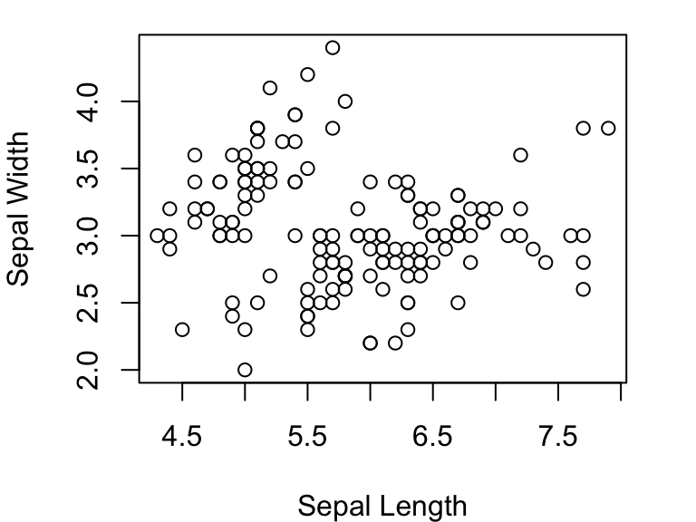
Now add a plot title using main= and change re-orient
the y-axis values to be horizontal using las=:
plot(Sepal.Width~Sepal.Length, data=iris, xlab="Sepal Length", ylab="Sepal Width", main="Length vs. width of sepals in Iris", las=1)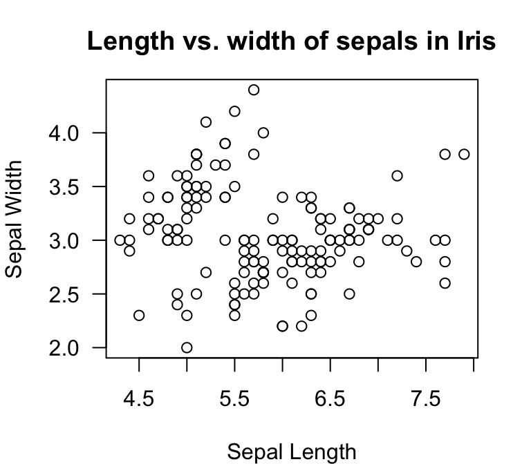
You can change the x- and y-axis ranges by using xlim=
and ylim=. These arguments each take a vector of two
numbers representing the minimum and maximum values. Let’s make the same
plot, but with different axis limits:
plot(Sepal.Width~Sepal.Length, data=iris, xlab="Sepal Length", ylab="Sepal Width", main="Length vs. width of sepals in Iris", las=1, xlim=c(0,10), ylim=c(0,5))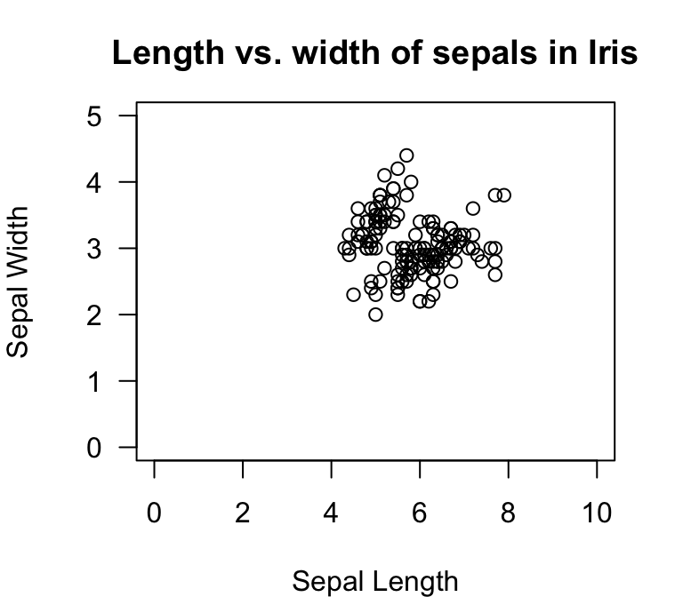
5.4.2 Types of points
You can specify the types of points you want to use with the
pch= argument. Try this:
plot(Sepal.Width~Sepal.Length, data=iris, xlab="Sepal Length", ylab="Sepal Width", las=1, pch=4)Here are what the symbols look like for ‘pch’ values ranging from 1 to 25. 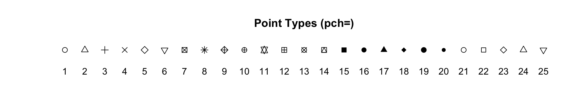
You can manipulate the sizes of points by using the argument
cex=:
plot(Sepal.Width~Sepal.Length, data=iris, xlab="Sepal Length", ylab="Sepal Width", las=1, pch=1, cex=3)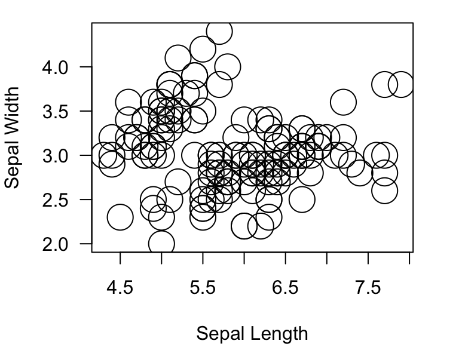
5.5 Colors!
You can specify the colors of the points using the argument
col= inside the plot() function. This argument
can take many different types of inputs:
- numerical values from 1:8
- names of colors (you need to know the specific name that R recognizes)
- hexadecimal RGB color specification
- create a color palette
- the
rgb()function
5.5.1 Using numerical values:
plot(Sepal.Width~Sepal.Length, data=iris, xlab="Sepal Length", ylab="Sepal Width", las=1, pch=19, col=4)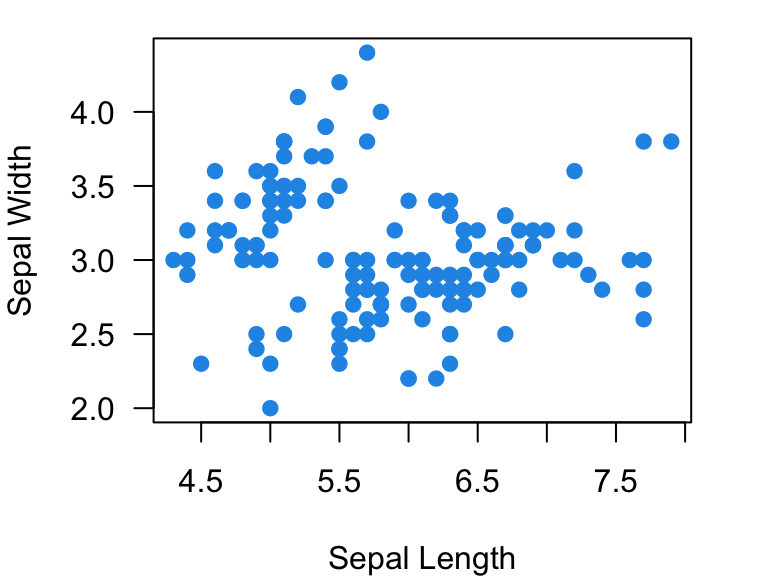
However, using numerical values is pretty limiting. R only uses values of 1 through 8 to assign colors. Here are those colors: 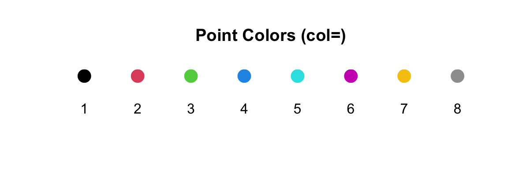
5.5.2 Using named colors:
You can also specify colors using just the names of colors as characters. For example, to make a plot with red dots:
plot(Sepal.Width~Sepal.Length, data=iris, xlab="Sepal Length", ylab="Sepal Width", las=1, pch=19, col="red")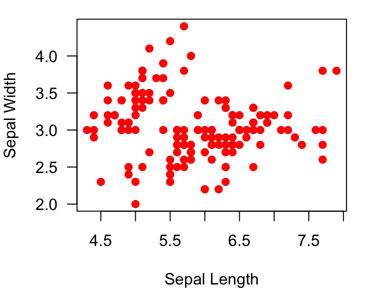
There are infinite possibilities for color in R. Many colors have straightforward names (e.g., like “blue”), but there are also lots of crazy color names. Here is one useful page for named colors: http://www.stat.columbia.edu/~tzheng/files/Rcolor.pdf
Here are some examples: 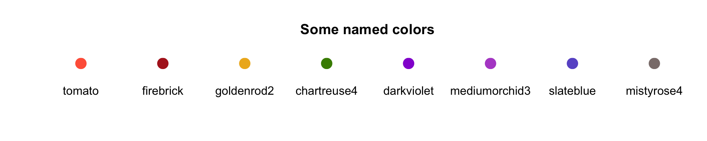
5.5.3 Using hexadecimal color specification:
You can use the standard hexadecimal color specification. For example, the hexadecimal code for green is #00FF00:
plot(Sepal.Width~Sepal.Length, data=iris, xlab="Sepal Length", ylab="Sepal Width", las=1, pch=19, col="#00FF00")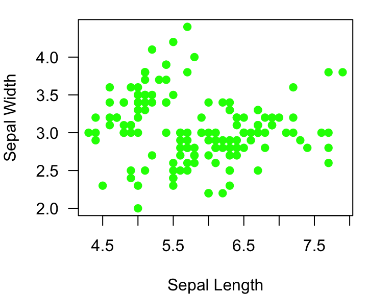
You can look up hex color codes here: http://www.color-hex.com/
###5.5.4 Creating a color palette: There are several functions to
create color palettes from a template. For example, we can use a
rainbow() function. You can put the number of colors you
want, and the function will pick three colors that are the most
different from each other within the specified spectrum.
Try it out by plotting 12 different colors:
my.colors=rainbow(12) #set up color palette of rainbow colors with n = 12
plot(1:12, pch=19, cex=2, col=my.colors) #plot dots, each with different colors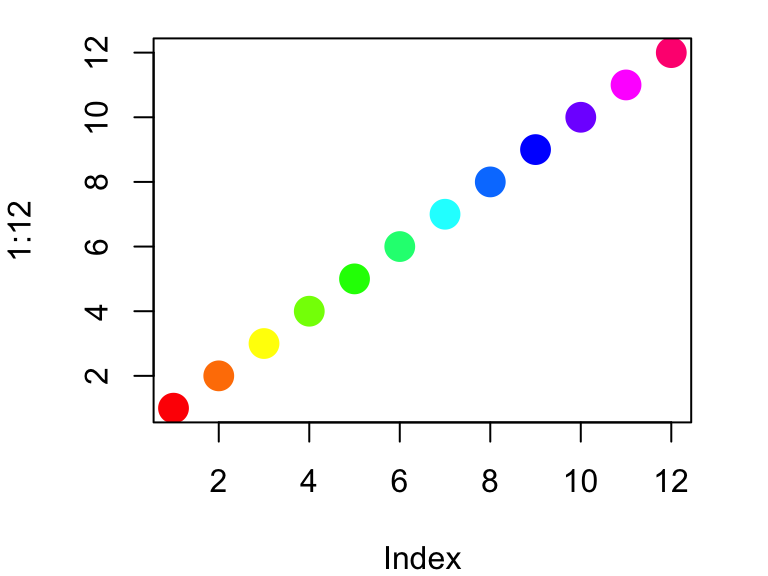
Other examples of color palettes include: heat.colors(),
terrain.colors(), topo.colors() and
cm.colors()
my.colors=topo.colors(12) #set up color palette of topo colors with n = 12
plot(1:12, pch=19, cex=2, col=my.colors) #plot dots, each with different colors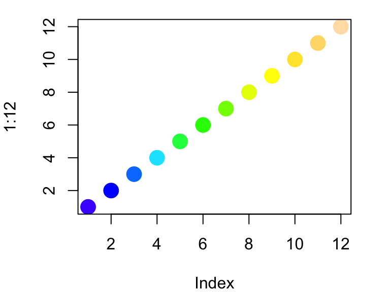
Try the same with heat.colors(),
topo.colors(), and cm.colors().
You can get more color palettes from other R Packages such as RColorBrewer.
5.5.5 Using the rgb() to produce different colors
There are a couple of ways to create color gradients. First, you can
use the rgb() function to create custom colors. This
function takes four arguments: intensities of red, green, blue, and the
alpha transparency value. Thus, you can create any color with any
opacity. Here are some examples of colors that you can produce with the
rgb() function.
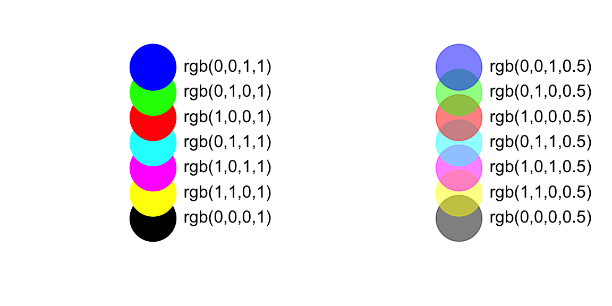
Let’s try plotting the figure with enlarged points and transparent color:
plot(Sepal.Width~Sepal.Length, data=iris, xlab="Sepal Length", ylab="Sepal Width", las=1, pch=1, cex=3, col=rgb(1, 0, 0, 0.5))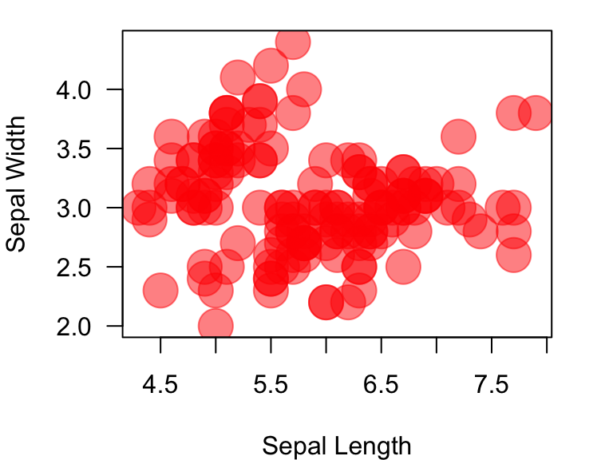
5.6 Setting up the plotting region using par()
The par() function is used before the
plot() function to set up aspects of the plotting region.
For example, you can set the plotting region to be two columns and plot
two different plots using mfrow= argument inside the
par() function.
par(mfrow=c(1,2)) #set up a plotting region with one row and two columns:
plot(Sepal.Width~Sepal.Length, data=iris, xlab="Sepal Length", ylab="Sepal Width", las=1, pch=19, col="#00FF00") #first plot
plot(Sepal.Width~Sepal.Length, data=iris, xlab="Sepal Length", ylab="Sepal Width", las=1, pch=19, col="tomato") #secon plot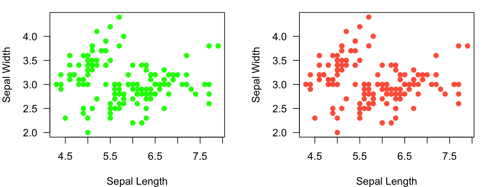
5.6.1 How to learn more about plot() and
par() functions
So we have learned some ways to customize plots in the sections
above. As you might imagine, there are many, many more ways to customize
plots. Most of the graphical parameters you need can be found by looking
in the help file for the function par(). Take a look at
this help file:
?parMany of the arguments presented in this help file can be called
within the plot() function or the par()
function. However, as noted near the beginning of the “Details” section,
there are several arguments that can only be called from the
par() function, and there are also several argumnets that
produce slightly different results based on whether they are called
within the plot() or par() function.
I have included an Appendix to this module that
contains a table of all graphical parameters I know of and their
usage.
5.7 Plotting data by factors and using legends
So far, we have plotted all items within a plot using the same
symbols. Howevever, we may often want to display more information in a
figure. For example, the iris dataset contains information
about three different species. How about we plot data from different
species in different colors?
Let’s think about how we might do this. Recall that the dataframe has a
column for species:
head(iris$Species) #recall that head() shows the first three elements of a vector## [1] setosa setosa setosa setosa setosa setosa
## Levels: setosa versicolor virginicaSo what we want to do is convert this information to colors. There are a couple of ways to do this. First, we can convert species into numbers, and then use that to assign colors… like this:
as.numeric(iris$Species) #convert species into numbers.## [1] 1 1 1 1 1 1 1 1 1 1 1 1 1 1 1 1 1 1 1 1 1 1 1 1 1 1 1 1 1 1 1 1 1 1 1 1 1
## [38] 1 1 1 1 1 1 1 1 1 1 1 1 1 2 2 2 2 2 2 2 2 2 2 2 2 2 2 2 2 2 2 2 2 2 2 2 2
## [75] 2 2 2 2 2 2 2 2 2 2 2 2 2 2 2 2 2 2 2 2 2 2 2 2 2 2 3 3 3 3 3 3 3 3 3 3 3
## [112] 3 3 3 3 3 3 3 3 3 3 3 3 3 3 3 3 3 3 3 3 3 3 3 3 3 3 3 3 3 3 3 3 3 3 3 3 3
## [149] 3 3So, we can use this trick to assign different colors to dots for different species.
plot(Sepal.Width~Sepal.Length, data=iris, xlab="Sepal Length", ylab="Sepal Width", las=1, pch=19, col=as.numeric(iris$Species))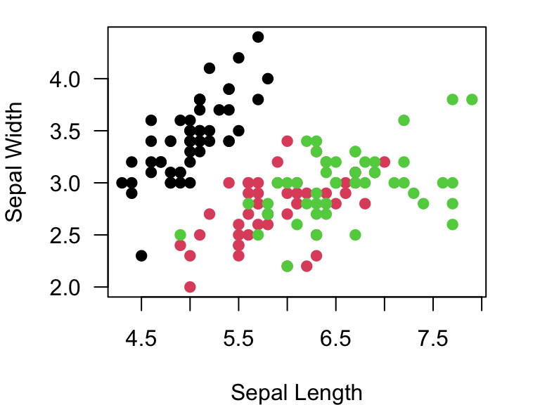
You can look above to where we discussed colors and see that col=1 is black, col=2 is red, and col=3 is green.
However, you may want to assign your own custom color sets to the
plots. If so, what you need to do is come up with three colors that you
want to use, say from the topo.colors() function. Then, we
can use as.numeric(iris$Species) (remember: these values
range from 1 to 3) as the index to point to the color that will
correspond to the species. Try this:
colorset=rainbow(3) #create a palette of 3 colors
pt.cols=colorset[as.numeric(iris$Species)] #This is now a vector of colors for each pointNow, you can use this new set of colors, pt.cols, for
the plot.
plot(Sepal.Width~Sepal.Length, data=iris, xlab="Sepal Length", ylab="Sepal Width", las=1, pch=19, col=pt.cols)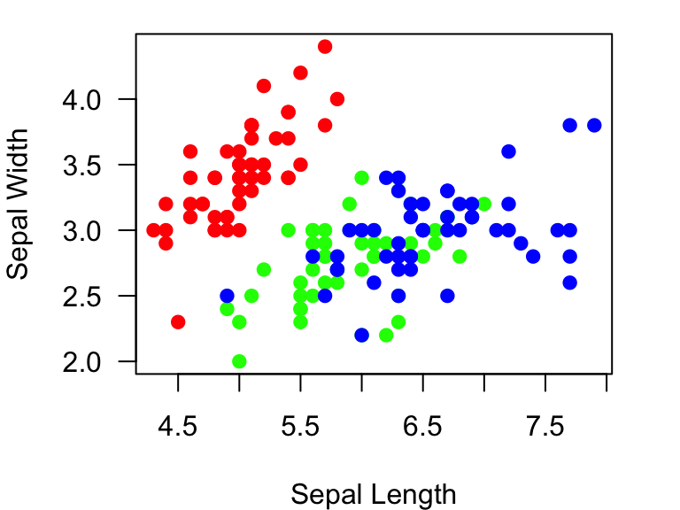
Of course, if you start using different colors for different
information, you need to add a legend. You can do that with the
legend() function. Take a quick look at the help file by
using ?legend. This function has arguments to assign the
location (either using a keyword or x-y coordinates) within the plotting
region where you want to put the legend, what the legends are, and
several parameters to assign the symbols. Here is an example:
plot(Sepal.Width~Sepal.Length, data=iris, xlab="Sepal Length", ylab="Sepal Width", las=1, pch=19, col=pt.cols)
legend("bottomright", legend=c("I. setosa", "I. versicolor", "I. virginica"), pch=19, col=colorset)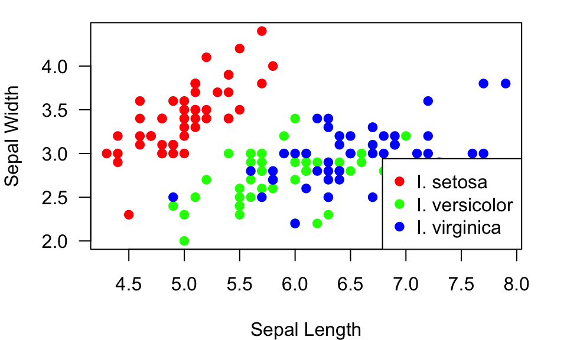
Here, I just told R to plot the legend on the bottom right, but you can also tell it the x-y coordinates of the top left corner of the legend. Often, just using the key words (“bottomright”, “bottom”, “bottomleft”, “left”, “topleft”, “top”, “topright”, “right” or “center”) works well.
Ok, the legend looks good, but it’s on top of some of the points.
What I would really like to do is plot the legend outside of the plot.
To do this, I have to do two things to set up the plotting region using
the par() function: Tell it to allow me to plot something
outside the axes (xpd=TRUE), and expand the margins of the
plotting region, especially to the right of the plot. This can be
specified using the mar= argument (see ?par
for details). Then, you can set the legend plotting region to be outside
the plot (say at x = 8.2 and y = 3):
par(mar=c(4,4,1,7), xpd=TRUE) #make the margin wider, and allow me to plot outside the box.
plot(Sepal.Width~Sepal.Length, data=iris, xlab="Sepal Length", ylab="Sepal Width", las=1, pch=19, col=pt.cols)
legend(8.2, 3, legend=c("I. setosa", "I. versicolor", "I. virginica"), pch=19, col=colorset)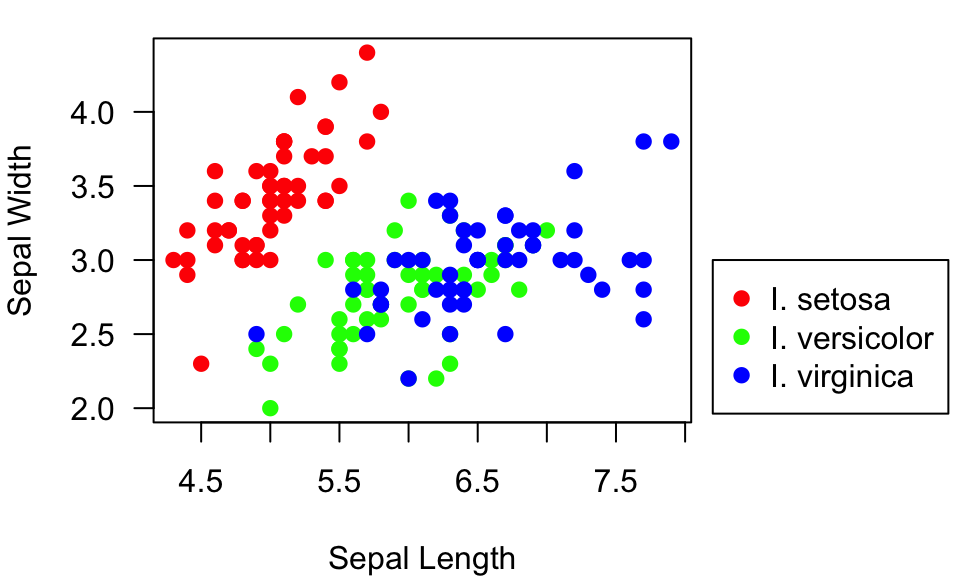
5.8 Adding more elements to existing plots
Sometimes, you want to add extra things like special points or lines
to an existing plot. You can do this using the points(),
lines(), text() and abline()
functions. When you get comfortable with adding elements to plots, you
can start to create really nice plots with lots of information.
To start, let’s assign the plot the we created above (without the
legend) to an object. This will save us from having to run the plotting
function each time we add an element. To do this, we generate the plot,
and then use the recordPlot() function to save it as an
object (output not shown):
plot(Sepal.Width~Sepal.Length, data=iris, xlab="Sepal Length", ylab="Sepal Width", las=1, pch=19, col=pt.cols) #make the plot again without the legend
example.plot=recordPlot() #save the plot as an object called 'example.plot'Now, let’s say we want to add some information about the average
Sepal length and width for each species here. We will first calculate
those average values using the tapply() function:
mean.Sepal.length=tapply(iris$Sepal.Length, iris$Species, mean)
mean.Sepal.width=tapply(iris$Sepal.Width, iris$Species, mean)
mean.Sepal.length## setosa versicolor virginica
## 5.006 5.936 6.588mean.Sepal.width## setosa versicolor virginica
## 3.428 2.770 2.974We will now use the points() function to add “x” at the
mean values for all three species:
example.plot
points(x=mean.Sepal.length, y=mean.Sepal.width, pch="x", cex=2) #add an "x" at the mean Sepal length & width for all three species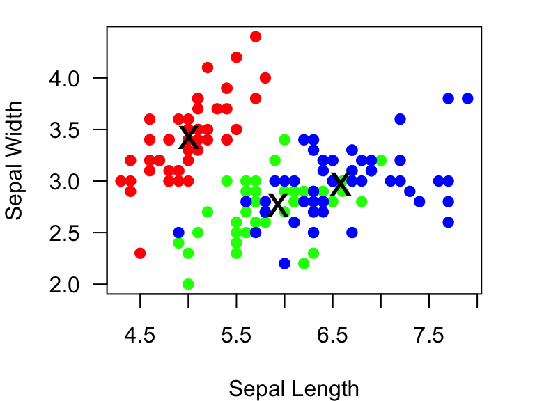
We can add text too. The text() function takes arguments
for where the text should be centered, but you can specify whether the
text goes below, left, above or right of the point (using the
pos= argument), and how far it should be offset from the
point (offset= argument):
example.plot
points(x=mean.Sepal.length, y=mean.Sepal.width, pch="x", cex=2)
text(x=mean.Sepal.length, y=mean.Sepal.width, labels=c("setosa", "versicolor", "virginica"), pos=1, offset=0.5) #add text below each of the "x" (pos=1), and how far it should be offset (offset = 0.5)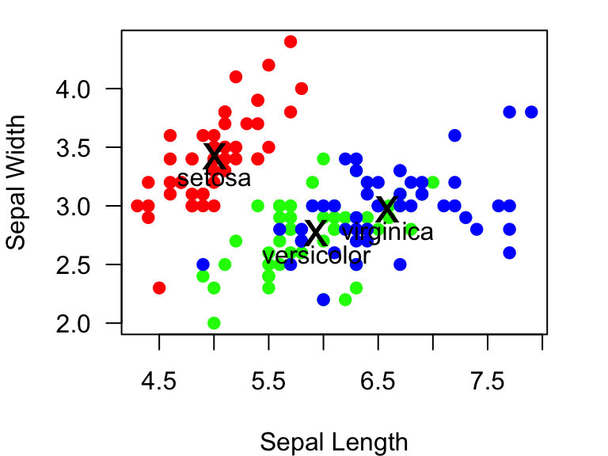
You can also add lines to plots. There are two functions to add
lines: abline() and lines(). The
abline() function is a bit more straightforward. This
function can be used to draw a line that is vertical, horizontal, or
with a specific slope and intercept. Let’s use this function to draw a
vertical line at the mean Sepal length for I. setosa using the
v= argument within the function. We will use the
lty=3 argument to make a dotted line.
example.plot
abline(v=mean.Sepal.length, lty=3) #add a vertical lines at the mean Sepal length for each species. We can also add lines for the mean Sepal widths, and make the line colors correspond to the point colors:
example.plot
abline(v=mean.Sepal.length, lty=3, col=colorset) #add vertical lines at the mean Sepal lengths for each species.
abline(h=mean.Sepal.width, lty=3, col=colorset) #add horizontal lines at the mean Sepal widths for each species.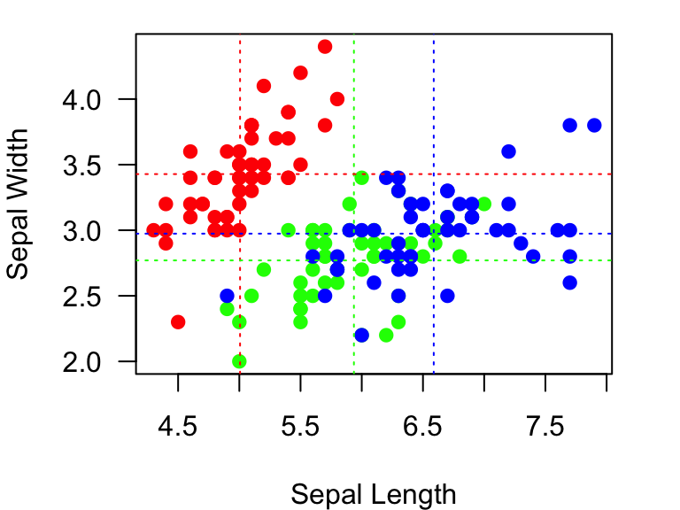
5.9 Saving Plots
Of course, you will want to sometimes save the figures you generated. There are two simple ways to do that: using the RStudio interface, or using a command.
####4.5.1 Using the RStudio interface Use the “Export” button under “Plots”. I would recommend saving the file as a pdf. Or, if you are just looking to quickly embed a plot in a word file, you can just copy to the clipboard and paste.
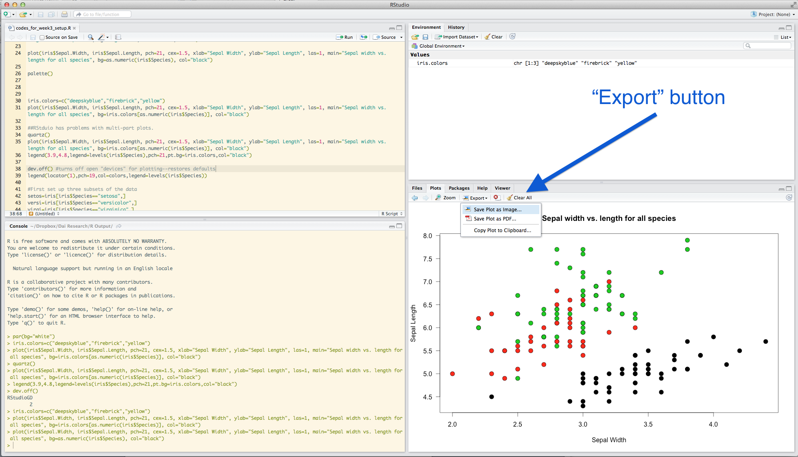
####4.5.2 Using R command You can save graphics in many different
formats using R commands. This procedure takes three steps:
1. open up a ‘graphical device’ using a function (e.g.,
pdf() or png())
2. plot a figure into that graphical device
3. close the graphical device
Only after you ‘close’ the graphical device can you see the output. For example, to save a figure as a pdf, you will follw these three lines of code:
pdf(file="exampleplot.pdf") #open up a pdf 'graphical device'
plot(Sepal.Width~Sepal.Length, data=iris, xlab="Sepal Length", ylab="Sepal Width", las=1, pch=19, col=pt.cols) #draw the plot
dev.off() # close the graphical deviceAppendix: Useful Graphical Parameters
| Argument | How To Call | Default | Effect |
|---|---|---|---|
| adj | par() or plot() |
0.5 (center) | text justification |
| ann | par() or plot() |
TRUE | axis label on or off |
| ask | par() |
FALSE | ask before plotting |
| bg | par() or plot()** |
white | if called in par(): background of plot; if called in
plot(): background of symbol, only if pch=21 through 25
(filled symbols) |
| bty | plot() |
o | the type of box around the plot. Select from “o”, “l”, “7”, “c”, “u” or “]” |
| cex | par() or plot()** |
1 | character size expansion (i.e., magnification). If called in
par(): magnifies both symbols and text; if in
plot(): magnifies symbols only |
| cex.axis | par() or plot() |
1 | axis magnification |
| cex.lab | par() or plot() |
1 | axis label magnification |
| cex.main | par() or plot() |
1 | title magnification |
| cex.sub | par() or plot() |
1 | subtitle magnification |
| col | par() or plot()** |
black | color. If in par(): color of symbols and box; in plot:
color of symbols |
| col.axis | par() or plot() |
black | color of axis values |
| col.lab | par() or plot() |
black | color of axis labels |
| col.main | par() or plot() |
black | color of main title |
| col.sub | par() or plot() |
black | color of sub-title |
| family | par() or plot() |
“” | font family: can be “serif”, “sans”, “mono”, “symbol” |
| fg | par() or plot() |
black | foreground color. |
| fig | par() |
set region of the display device in which to plot. Use vector of form c(x1,x2,y1,y2), with values ranging from 0 to 1. E.g., par(fig=c(0,0.5,0,0.5)) will put the subsequent plot in the lower left corner of the plotting window. You need to also specify new=TRUE to add more plots to the same window. | |
| fin | par() |
Same as fig=, but in inches | |
| font | plot() |
1 | font type: 1 = plain text, 2 = bold, 3 = italic, 4 = bold italic |
| font.axis | par() or plot() |
1 | font type of axis values |
| font.lab | par() or plot() |
1 | font type of axis labels |
| font.main | par() or plot() |
2 | font type of main title |
| font.sub | par() or plot() |
1 | font type of sub-title |
| las | par() or plot() |
0 | axis annotation type: 0 = parallel to axis, 1 = horizontal, 2 = perpendicular to axis, 3 = vertical |
| log | plot() |
can set axes to be log by log=“x”, log=“y” or log=“xy” | |
| lty | par() or plot() |
1 | line type. Specify by integer (0=blank, 1=solid, 2=dashed, 3=dotted, 4=dotdash, 5=longdash, 6=twodash) or character (“blank”, “solid”, “dashed”, “dotted”, “dotdash”, “longdash”, or “twodash”) |
| lwd | par() or plot() |
1 | line width. If called in par(): include line width of
symbols & box. In plot() or lines(): only line width of
plotted lines |
| mai | par() |
margin size in inches. Use vector form c(bottom, left, top, right) | |
| mar | par() |
c(5,4,4,2)+0.1 | margin size in number of lines of text |
| mfcol | par() |
c(1,1) | specify number of rows and columns to split the plotting device in the form c(nrow,ncol). Will plot in order by columns |
| mfrow | par() |
c(1,1) | Same as above, but will plot in order by rows |
| mfg | par() |
set the order of figures to be plotted from an array | |
| mgp | par() or plot() |
c(3,1,0) | margin lines for axis title, label and line |
| new | par() |
FALSE | if TRUE, plot the next plot over the pre-existing one |
| oma | par() |
set outer margin size in lines of text c(bottom, left, top, right) | |
| omd | par() |
set outer margin in “device coordinates” (values of 0 to 1): form c(x1, x2, y1, y2) | |
| omi | par() |
set outer margin in inches | |
| pch | par() or plot() |
1 | symbol type. See class notes |
| tck | par() or plot() |
-0.05 | length of tick marks. If tck=1, shows grid lines |
| xaxp | plot() |
can set cordinates of extreme tick marks and intervals. | |
| xaxt | par() or plot() |
if xaxt=“n”, suppresses plotting x-axis | |
| xlim | plot() |
set the x-axis limits by c(x1,x2) | |
| xpd | par() |
FALSE | plot clipping. If FALSE, clips to plot region. if TRUE, clips to figure region, if NA, clips to device region |
| yaxp | plot() |
can set cordinates of extreme tick marks and intervals. | |
| yaxt | par() or plot() |
if “n”, suppresses plotting y-axis by c(y1,y2) | |
| ylim | plot() |
set the y-axis limits by c(y1,y2) |